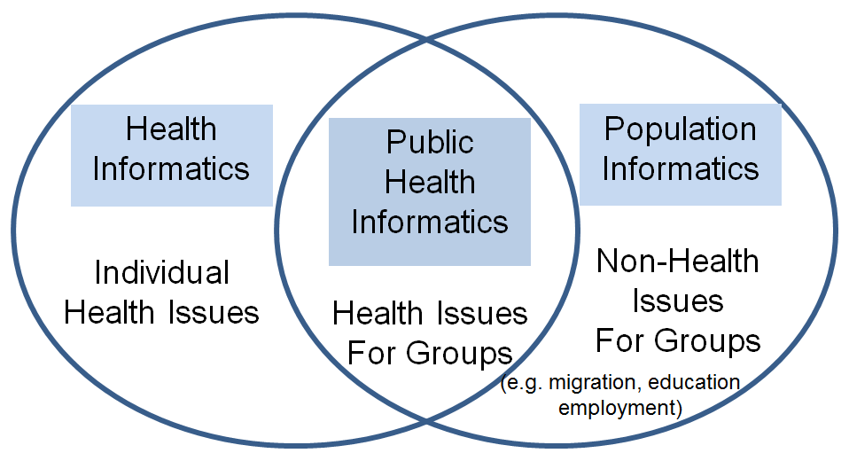

New scientific opportunities are emerging as a result of increasingly effective data organization, access, and usage. Many fields of study have been transformed to a new level by new tools and data infrastructure. For example, the analysis of DNA sequence data has transformed medical research. We need to push the frontier of social sciences by doing the same with digital data available about our society; this will enable us to gain fundamental insights into the many facets of our society. A key source of information about all aspects of our society resides in government administrative data and various private operational data. From the day we are born until our death, most all of our activities leave footprints in various digital data systems. Birth, marriage, and death certificates are filed with the government, education records remain with departments of public instruction, and traces of employment can be found in the ESC UI (Employment Security Commission Unemployment Insurance) wage data. Without a doubt, a well-integrated data system that can encompass much of the data systems will hold the footprints of our society, our social genome. The two main hurdles to building such a system to transform the social sciences are (1) privacy concerns and the laws in place to protect individual confidentiality, and (2) the physiology of administrative data, which is fragmented, short-lived, and sometimes has questionable reliability.
Our group’s research focuses on resolving these two barriers to building a federated data system of digital data about people for research. Once resolved, we can build the social genome data infrastructure that could finally allow us to move toward understanding how current policies play out in our society and how to make informed policies using information and knowledge gathered from these digital traces.
1. What is the main idea?
By scope and intent of the Social Genome Project is a data-rich knowledge base for researchers, professionals, business leaders, and government officials to capture interesting entities and relationships, as detailed below:
2. Why will it work?
Companies already monitor our activities to maximize profit. It’s time to use datamining technology for the worthy goal of understanding and solving the problems of society. A transparent data system can provide a rich source of information for population informatics.
The Social Genome Project will facilitate use of such data by building an infrastructure of tools and techniques required for such research while designing privacy protection into the infrastructure itself. This project envisions a totally transparent glass building with all the data and tools required to use the data where all activities can be monitored by the public at all times.
3. What are the main challenges?
The main building blocks of a Social Genome Data Center are
4. How would you fund/sustain the project?
Government agencies are under increasing pressure to be more transparent and to use data in everyday decision making, but they have sparse expertise to do so.
By building a common data library accessible to approved people, agencies can more readily collaborate with experts and researchers to turn data into policy and action. Those who become experts of such data through these government projects can then use the social genome data to pursue larger grants (i.e. NSF/NIH) to answer fundamental questions about our society. The project will be supported by contracts with government agencies for direct policy and evaluation and grant funding for investigating fundamental questions about the most challenging problems facing our society—healthcare, education, employment, welfare, economics, and the environment.
5. What is it used for ?
The social genome data is critical for the burgeoning field of population informatics, public health informatics, and health informatics.

6. Are there technical papers on the topic ?

{kind=link}